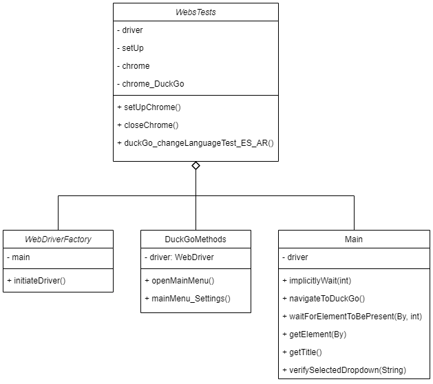

Testing selenium project for DuckDuckGo, Python's Website and OpenAI.
Intoduction
Welcome to my Selenium Automation Framework, a testament to my skills as an automation tester. This framework is designed to streamline web testing using Selenium WebDriver, providing a modular and organized structure for efficient test development.
You can view the full framework code here.
The test file, WebsTests.java, serves as a showcase of practical scenarios. These tests are designed to simulate real-world user interactions with different websites, showcasing the framework's versatility and reliability.
DuckDuckGo Language Change Test
This test verifies the language change functionality on the DuckDuckGo website. It involves navigating to DuckDuckGo, accessing the main menu to reach settings, and changing the language to "Español (Argentina)." The validation step ensures the selected language is successfully changed.

Python Documentation Navigation Test:
Focused on Python's documentation, this test confirms successful navigation to the "Beginner's Guide." By navigating to Python's documentation and selecting the "Beginner's Guide" from the left menu, the validation step checks if the page title matches the expected "BeginnersGuide - Python Wiki." This demonstrates the framework's effectiveness in navigating complex documentation structures.

OpenAI Website Navigation Test:
This test scenario involves navigating through different sections on the OpenAI website. Starting from the main page, it selects the "Research" menu, clicks on "GPT-4," then navigates to the "Company" menu, specifically to the "Blog" section. The final step includes searching for "GPT-4" in the blog page. Validation ensures the correctness of each navigation step and the successful search, showcasing the framework's versatility in handling multi-step interactions on dynamic websites.